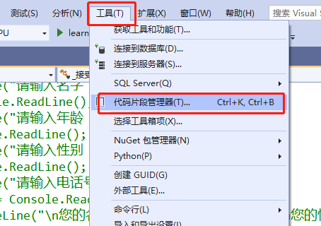
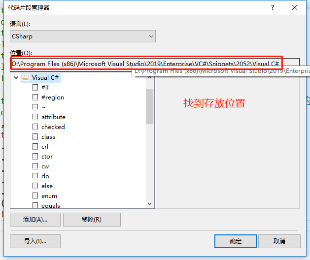
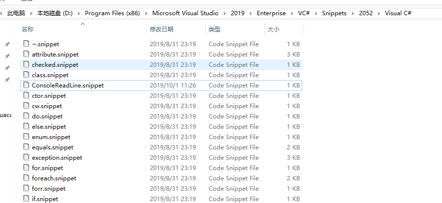
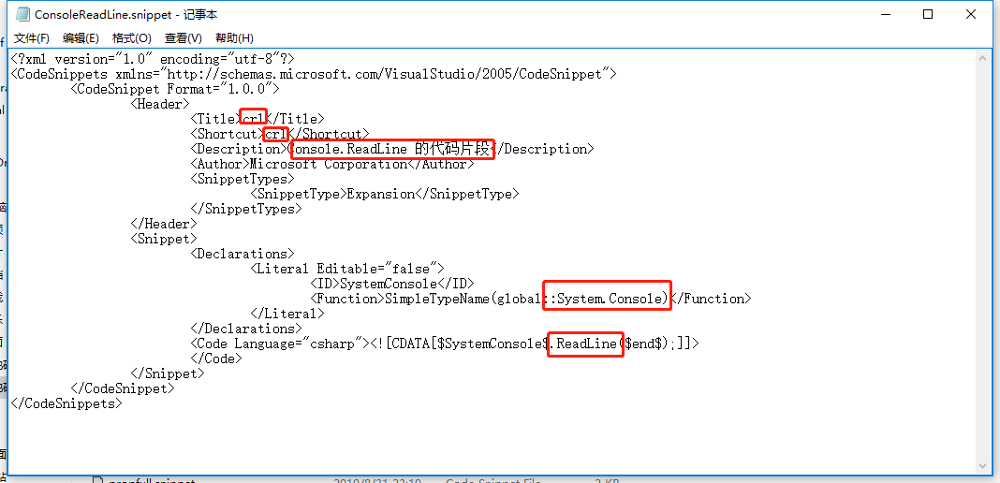

转自：https://blog.csdn.net/a980433875/article/details/12231673
Visual Studio 中有很多代码段都可以直接简写然后按TAB快速输入编译器中，为了提高编程效率，特此查阅资料，罗列总结。
1. ~ 创建析构函数
~Program()
{
}
2. checked 创建checked块
checked
{
}
3. class 创建类声明
classMyClass
{
}
4. ctor 创建对应类的构造函数
public Program ()
{
}
5. cw 创建对Console.WriteLine();的调用
Console.WriteLine();
6. do 创建do(while)循环
do
{
} while (true);
7. else 创建else块
else
{
}
8. enum 创建enum声明
enumMyEnum
{
}
9. for 创建for循环
for (int i = 0; i < length; i++)
{
}
10. foreach 创建foreach循环
foreach (var itemin collection)
{
}
var 代表要循环访问的集合中对象的类型
item 表示集合中的元素的标示符
collection 要循环访问的集合或数组的名称
11. forr 创建for循环，在每次循环后递减循环变量
for (int i = length - 1; i >= 0; i--)
{
}
12. if 创建if块
if (true)
{
}
13. interface 创建interface声明
interfaceIInterface
{
}
IInterface 代表接口名称
14. lock 创建lock块
lock (this)
{
}
this 代表表达式
15. namespace 创建namespace声明
namespace MyNamespace
{
}
16. prop 创建属性代码块
publicint MyProperty {get;set; }
17. struct 创建struct声明
struct MyStruct
{
}
18. svm 创建static viod声明
staticvoid Main(string[] args)
{
}
19. switch 创建switch代码块
switch (switch_on)
{
default:
}
switch_on 代表条件表达式
20. try 创建try-catch代码块
try
{
}
catch (Exception)
{
throw;
}
21. unchecked 创建unchecked代码块
unchecked
{
}
22. unsafe 创建unsafe代码块
unsafe
{
}
23. using 创建using指令
using (resource)
{
}
resource为要使用的资源
24. while 创建while循环
while (true)
{
}
true可替换为运算结果为bool类型的表达式。
如上属于visual studio 中常用的C#代码段简写，我们还可以通过在VC#\Snippets\2052\Visual C#中添加.snippet文件，
即编写自定义的C#代码段，
1、选择“工具”，“代码段管理器”

2、复制位置中的路径

3、win+r快捷键打开运行，然后粘贴位置信息回车
4、在这个文件夹下就可以看到VS中提供的代码段了

5、复制一个代码段到桌面
6、用记事本打开
7、修改代码段

8、然后重命名后放到文件夹中（格式要为.snippet）
先保存在桌面，改成后缀后，在复制到相应文件夹。
9、重启IDE，这时候代码段的快捷方式就可以使用了
不重启貌似也行。
小结：
虽然设置代码段可以方便大家，提高效率，但是如果你对代码的熟练度还不够，就先
不要经常使用。
有问题不可怕，可怕的是感觉没问题，但是问题一大把；发现问题才能成长，解决问
题才会更强！